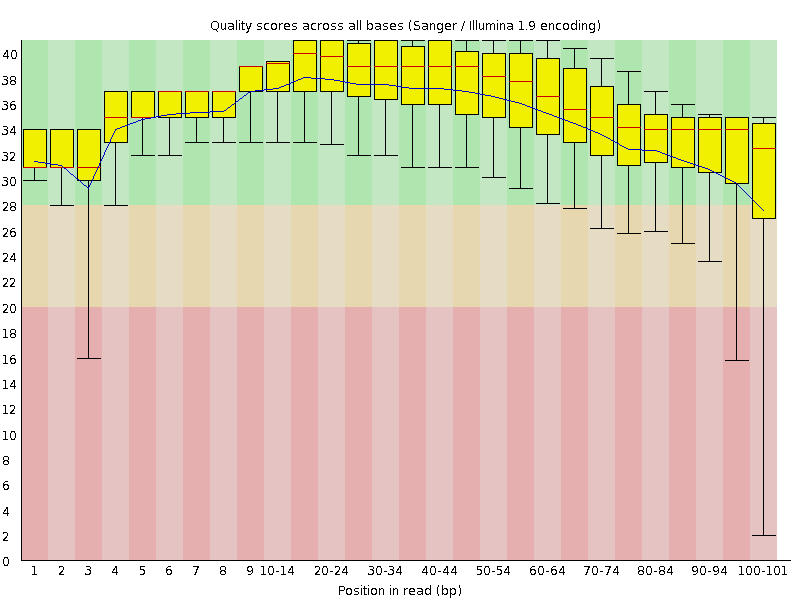
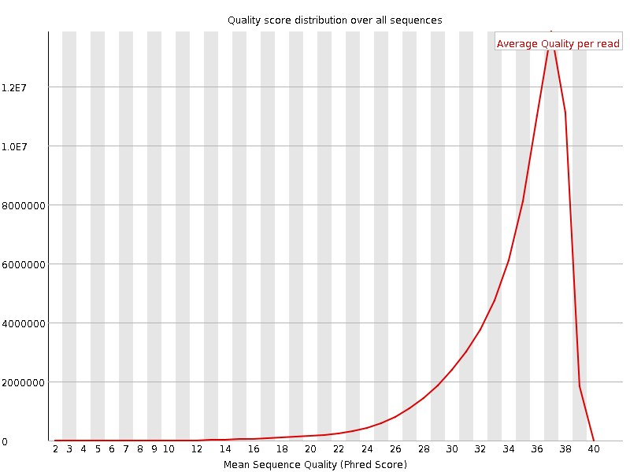
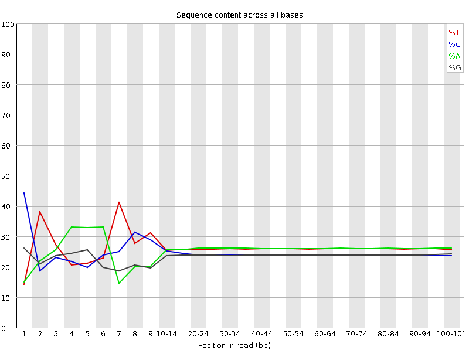
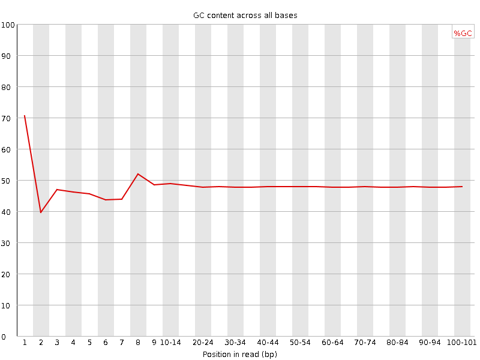
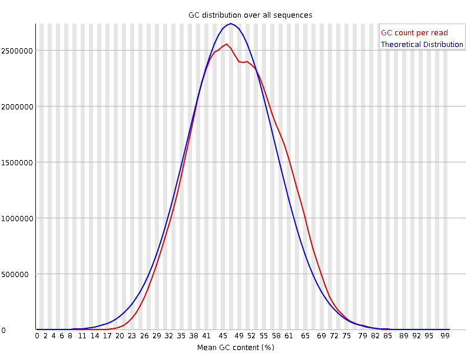
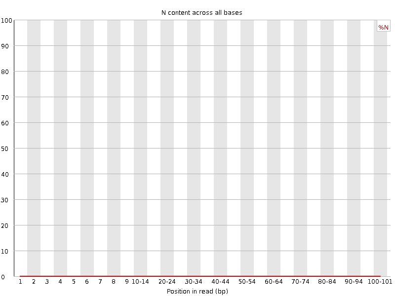
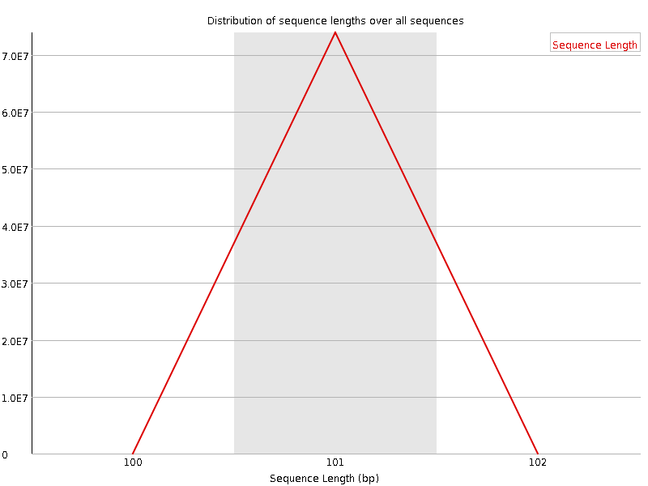
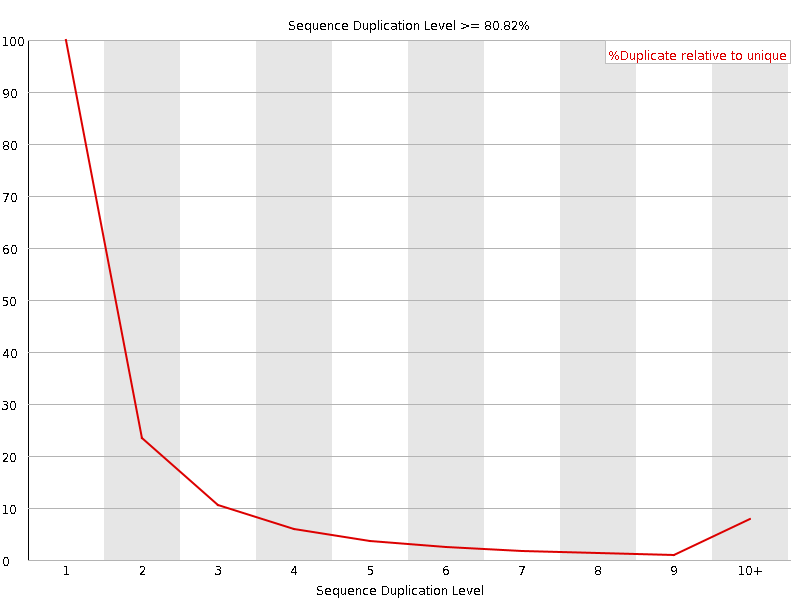
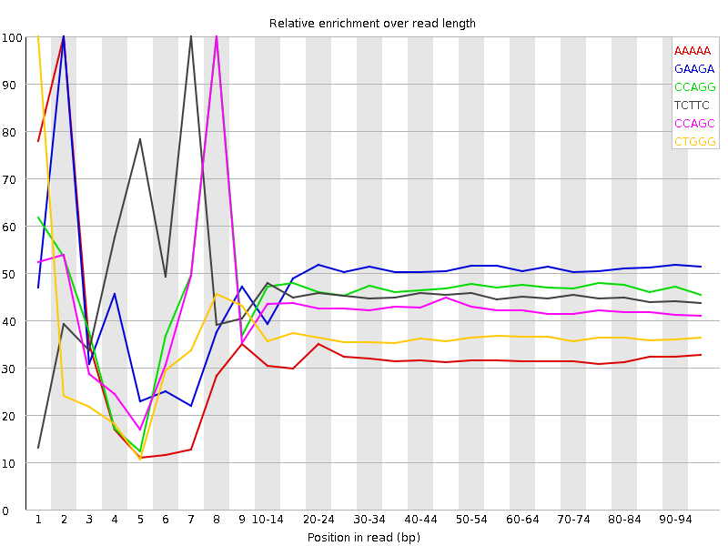

![[OK]](Icons/tick.png) Basic Statistics
Basic Statistics
| Measure | Value |
|---|---|
| Filename | ERR361060_1.fastq |
| File type | Conventional base calls |
| Encoding | Sanger / Illumina 1.9 |
| Total Sequences | 73852764 |
| Filtered Sequences | 0 |
| Sequence length | 101 |
| %GC | 48 |
Per base sequence quality

Per sequence quality scores

![[FAIL]](Icons/error.png) Per base sequence content
Per base sequence content

Per base GC content

Per sequence GC content

Per base N content

Sequence Length Distribution

Sequence Duplication Levels

Overrepresented sequences
No overrepresented sequences
![[WARN]](Icons/warning.png) Kmer Content
Kmer Content

| Sequence | Count | Obs/Exp Overall | Obs/Exp Max | Max Obs/Exp Position |
|---|---|---|---|---|
| AAAAA | 21208580 | 2.5233786 | 7.841823 | 2 |
| GAAGA | 17619040 | 2.4911556 | 5.0354905 | 2 |
| CCAGG | 15322550 | 2.4836583 | 5.3133607 | 8 |
| TCTTC | 18293005 | 2.4612803 | 5.39719 | 7 |
| CCAGC | 14974455 | 2.384015 | 5.6014233 | 8 |
| CTGGG | 14314180 | 2.3515332 | 6.497365 | 1 |
| TTTTT | 20105550 | 2.3382556 | 5.633236 | 2 |
| CTGGA | 15315575 | 2.3080437 | 7.693473 | 1 |
| TCCAG | 15333010 | 2.269527 | 7.6548095 | 7 |
| CTTCA | 16624710 | 2.247031 | 6.89241 | 1 |
| CTCCA | 14546180 | 2.1147258 | 6.5016227 | 6 |
| TCCTG | 14194295 | 2.0914273 | 5.4475994 | 7 |
| CTGCC | 12838635 | 2.034688 | 5.5830283 | 8 |
| CTGGC | 12502950 | 2.0174105 | 5.6501284 | 1 |
| CAGAA | 14488065 | 2.0119917 | 5.2994313 | 1 |
| CCACC | 12050730 | 1.8843803 | 5.2322264 | 8 |
| AAAAT | 15661280 | 1.854894 | 5.8223114 | 3 |
| TTCCA | 13231620 | 1.788414 | 5.4016466 | 6 |
| CTCAG | 12013140 | 1.7781339 | 6.2457304 | 1 |
| CTTTG | 12897920 | 1.7668453 | 7.302506 | 1 |
| CTTTT | 14124355 | 1.7668295 | 6.3580275 | 1 |
| CTGAA | 12702120 | 1.7559537 | 5.4271297 | 1 |
| CAAAA | 13692865 | 1.7443604 | 5.791222 | 1 |
| CTTGG | 11586805 | 1.7381825 | 6.5931025 | 1 |
| TCTGC | 11752055 | 1.7315805 | 5.708002 | 7 |
| GGAAA | 12201330 | 1.7251457 | 5.392486 | 1 |
| TCCAC | 10484920 | 1.5242993 | 5.4737477 | 7 |
| TTTGA | 11081880 | 1.4178205 | 5.3593383 | 2 |
| CTTGA | 9483650 | 1.3050686 | 5.1686254 | 1 |
| ATCCA | 9457925 | 1.2841918 | 6.077796 | 6 |